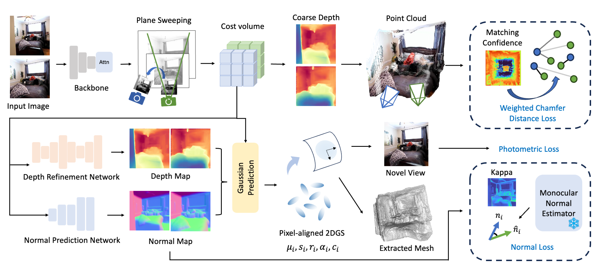

Overview of MeshSplat. Taken a pair of images as input, MeshSplat
begins with a multi-view backbone to extract feature maps for each view.
After that, we construct per-view cost volumes via the plane-sweeping method.
We use these cost volumes to generate coarse depth maps in order to get 3D
point clouds and apply our proposed Weighted Chamfer Distance Loss. Then
we feed cost volumes and feature maps into our gaussian prediction network,
which consist of a depth refinement network and a normal prediction network,
to obtain pixel-aligned 2DGS. Finally we can apply novel view synthesis and
reconstruct the scene mesh using these 2DGS.